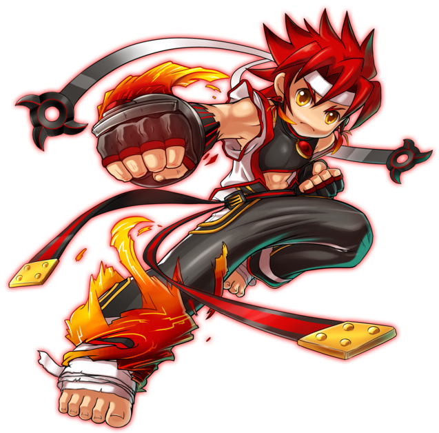
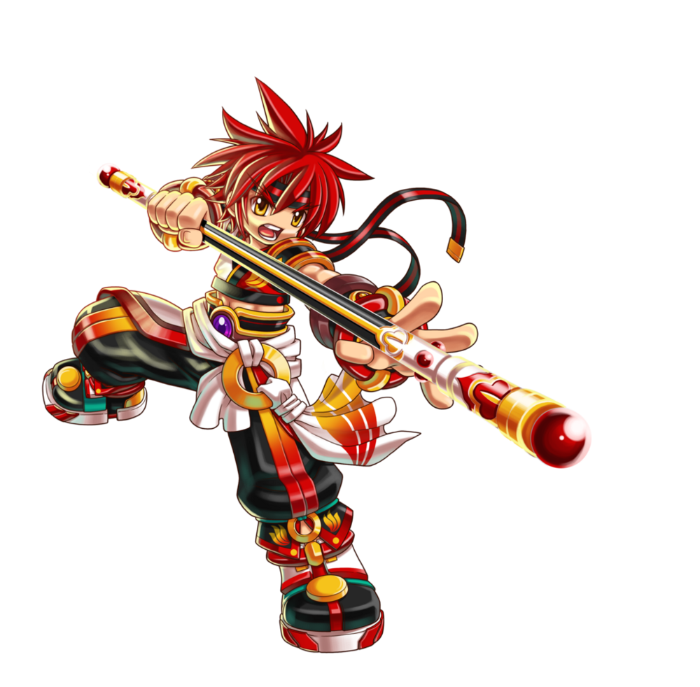
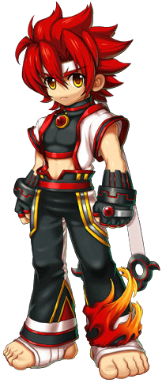
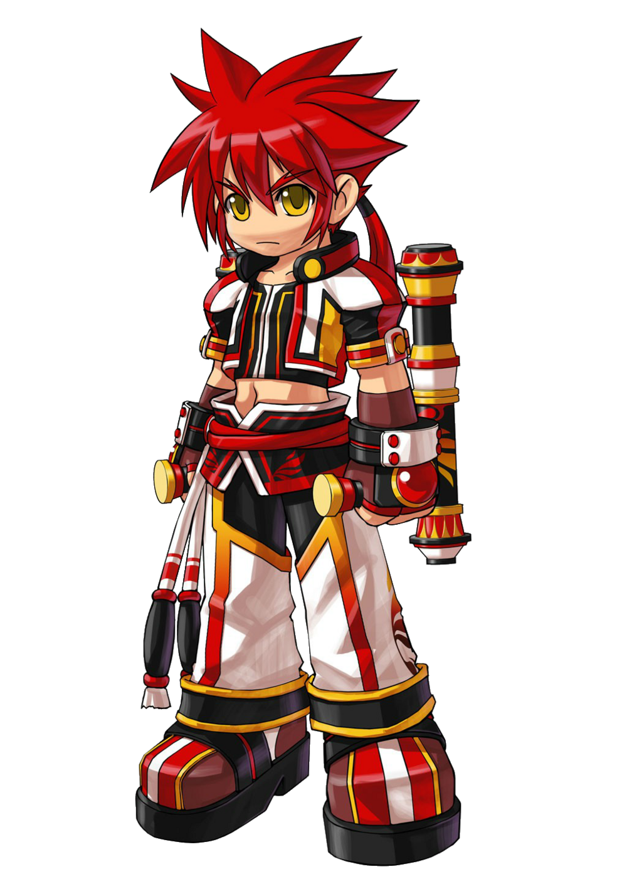
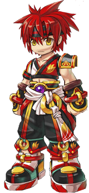
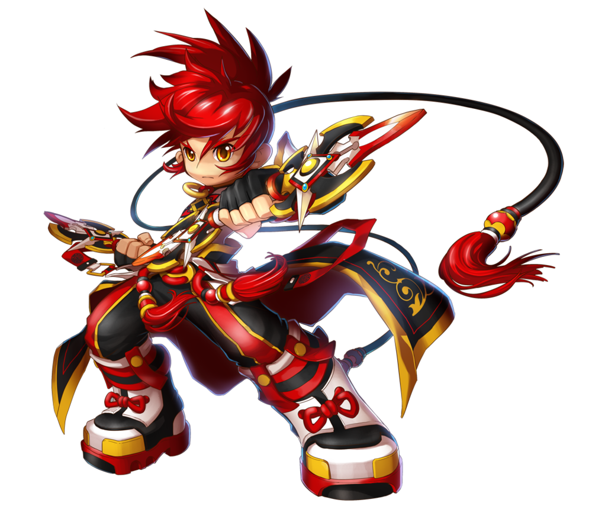
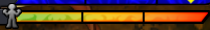

Informações Principais do Personagem
Nome: Jin Kaien
Idade: 17 anos
Origem: Terra de Prata


Nascido na Terra de Prata, Jin sempre foi um rapaz esforçado e corajoso. Logo cedo ele
começou seu treinamento de artes marciais para integrar a Ordem dos Cavaleiros de Prata, o grupo
de combate de elite que protegia a Terra de Prata.
Infelizmente, um terrível mal caiu sobre sua nação, corrompendo totalmente a Terra de Prata, e
levando seus cavaleiros a um trágico fim. Como último sobrevivente dos Cavaleiros de Prata, Jin
jurou restaurar a honra de seu grupo, e se uniu a Grand Chase para destruir o mal que havia
atacado sua terra natal.
Classes

Lutador
Arma: Manopla

Mestre
Arma: Tonfas

Monge
Arma: Bastão

Iluminado
Arma: Vajras
Habilidade especial
Barra de Fúria
A Barra de Fúria é uma habilidade especial dos lutadores. A barra pode ser usada tanto para
adicionar mais ataques, quanto para melhorar as suas habilidades que requerem uma barra cheia.
A barra é gerada em duas maneiras. A primeira é usando o comando X.PNG, enquanto a outra é
executar um contra-ataque (mesmo esta sendo imperceptível), e pode ser carregada e qualquer
hora. Se a barra não for usada dentro de 5 segundos, ela irá começar a diminuir sozinha. Quando
a barra está completamente cheia (isso demora aproximadamente 5 segundos, 4 para o Iluminado), o
Jin entrará em em um estado chamado "Modo Fúria". Fazendo isso, ele ganha o efeito super
armadura, resistindo a maioria dos efeitos atordoantes e a derrubamentos enquanto aumenta a sua
velocidade. Isso dura por aproximadamente 8 segundos, mas pode ser aprimorado na árvore de
talentos para 20 segundos.
Nota: A classe do Iluminado carrega a barra duas vezes mais rápido que as outras três, por
razões óbvias.
